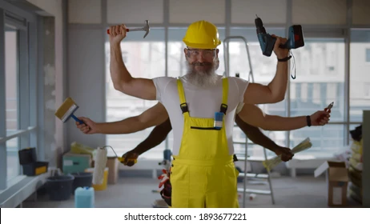

Call us on 1234
Call us on 1234

With 20 years of hands-on experience in carpentry and construction, I take pride in turning visions into solid, lasting structures. From home extensions and kitchen/bathroom fittings to building a house from scratch, I've honed my craft in every aspect of the trade. Precision, reliability, and a deep respect for quality materials are at the heart of every project. Building isn't just a job — it's about creating spaces where families grow, memories are made, and communities thrive. Raised and rooted in Devon, I combine traditional craftsmanship with modern techniques to deliver results that stand the test of time, using sustainably sourced local materials wherever possible. Services Custom Carpentry Home Extensions & Renovations Kitchen & Bathroom Installations Full Property Builds Period Property Restoration Proudly serving Devon with the same dedication I'd give to my own home.
For 25 years, Lee has been the cornerstone of [Your Business Name], blending old-world craftsmanship with modern construction expertise. As a Devon-born builder, his work reflects both the rugged durability of the coastline and the precision of a true artisan. A Builder of Many Talents Lee's versatility shines in his ability to: Restore period properties with heritage-sensitive techniques. Design contemporary extensions that breathe new life into homes. Tackle full-scale builds from foundation to finish carpentry. No project is too complex—whether it's a handcrafted oak staircase, a high-spec kitchen installation, or an eco-friendly home build, Lee approaches each challenge with equal passion. Rooted in Community A firm believer that great buildings grow from great relationships, Lee: Partners with Devon-based suppliers for sustainable materials. Mentors local apprentices to preserve traditional skills. Volunteers with [Local Organization] to improve housing access. “I measure success by the pride in a client's smile—and the decades a structure stands strong.”

With 15 years of meticulous woodworking experience, Jack brings an artist's eye and a perfectionist's touch to every project at [Your Business Name]. A Devon native like Lee, he shares the same commitment to quality, but with a specialized focus on transformative carpentry that turns raw materials into functional art. Precision Where It Matters Most Jack's hands have shaped: Bespoke kitchens with hand-fitted dovetail joints. Custom staircases that become a home's centerpiece. Built-in furniture tailored to millimeter precision. Heritage woodwork repairs preserving Devon's architectural charm. His ability to bridge traditional techniques with modern design means no detail is overlooked—whether it's the grain-matching of hardwood panels or the silent glide of a soft-close drawer. Community Craftsmanship Jack believes exceptional carpentry should serve everyone. He: Sources sustainably harvested local timber (often from Devon woodlands). Teaches weekend woodworking workshops at the community center. Donates skills to build accessible ramps for homes in need. “Wood speaks—if you listen. My job is to let its strength and beauty shine through.”